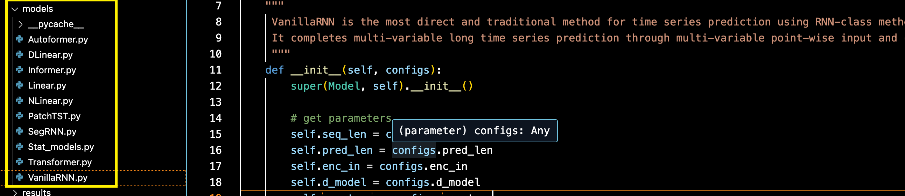
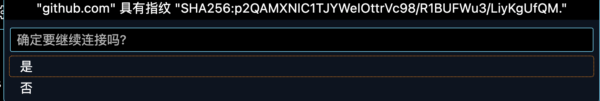
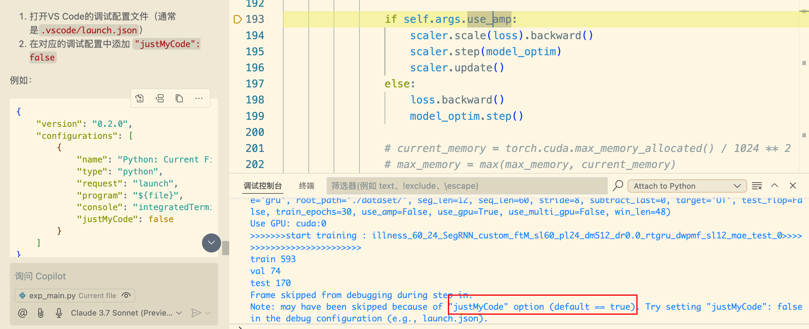
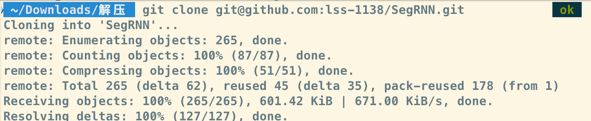
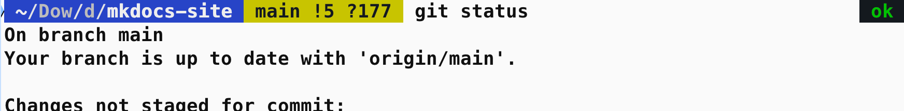
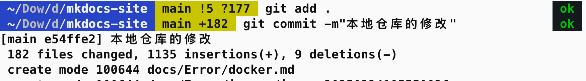
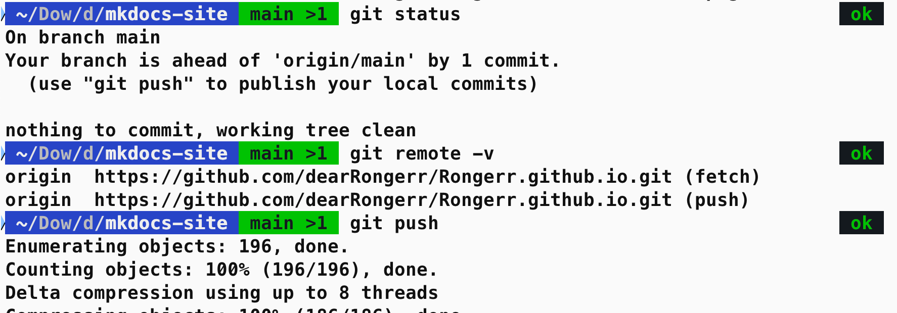

乐观 & 坚强¶
2025年 3 月 22 日 大阴天¶
傅里叶变换，要不你带我走吧，九敏了，一个头两个大。
一起唱，好运来，我们好运来🎵
终于，完成了 Autoformer 的 Decoder 部分，细节挺多的
两次注意力+一次前馈网
DecoderLayer 内部流动的是季节成分，趋势成分保留，然后相加，并且在 DecoderLayer 内部完成维度转换，用 kernel size=3，对序列进行平滑。
而在所有的 DecoderLayer 执行完以后，进行季节成分的维度转化还原为原始维度，用的是nn.Linear，保留尖锐部分。低频成分和高频成分在不同的位置进行维度还原，因为季节成分高频，所以在 Decoder 的过程中全部保持高维表示，但是 趋势成分就不需要了
每次注意力，前馈网的操作以后，紧跟着就是残差连接。
Autoformer 的创新在于，每次注意力和前馈网之后，都进行了序列分解，在 Encoder 中丢弃趋势分量，在 Decoder 中保存趋势分量逐层累加。
还有循环填充。还有双向跳转的锚点设置。
-
接下来开始看注意力机制是怎么实现的，新开一个文档。
-
并且把文档划分划分标题把（笑）
我知道我哪里别扭了，是因为没有更好的选择，所以是我。只是一种没有安全感的关系。算了，琐碎，不管，除了现在的自己，都是虚无
2025年 3 月 19 日¶
好了好了，干活了，看 Autoformer
- mkdocs 页面嵌入 pdf
- mkdocs & mermaid
mkdocs yml 配置文件，今天修改了配置文件，页面嵌入本地 pdf
这个相当于备份。
这里的配置缩进，非常容易报错，AI 自动给错输出的全文本内容会有删减，细心点吧。
site_name: My Docs
site_name: 溶err
site_url: https://mydomain.org/mysite
# edit_uri: edit/main/docs/
# - 建站：241114
edit_uri: https://github.com/dearRongerr/Rongerr.github.io/edit/main/docs
nav:
# 为了将页面链接到某个部分，
# 请在相应的文件夹中创建一个名为 index.md 的新文档，
# 并将其添加到导航部分的开头
- 便签:
- sticks/mkdocs_learn.md
- sticks/markdwon_learn.md
- sticks/latex.md
- sticks/GitHub.md
- sticks/MacOS.md
- sticks/shell.md
- sticks/linux.md
- sticks/screen.md
- sticks/docker.md
- sticks/writting.md
- sticks/1_github_v1.md
- sticks/2_python.md
- sticks/3_vscode.md
- 面试:
- 题目:
- bagu/questions/1_questions.md
- 力扣:
- bagu/leetcode/index.md
- bagu/leetcode/1.md
- bagu/leetcode/2.md
- 深度学习:
- bagu/deeplearning/index.md
- bagu/deeplearning/transformer.md
- bagu/deeplearning/former1.md
- bagu/deeplearning/former2.md
- bagu/deeplearning/pytorch_shape_function.md
- bagu/deeplearning/1.md
- 机器学习:
- bagu/machinelearning/kmeans.md
- bagu/machinelearning/2.md
- 捉个虫:
- Error/github.md
- Error/latex.md
- Error/python.md
- Error/macos.md
- Error/docker.md
- 笔记:
- learning/3_ViT.md
- learning/1_clip.md
- learning/2_MOCO.md
- learning/2.md
- learning/1.md
- learning/vit.md
- learning/swintransformer.md
- learning/pe.md
- learning/convs.md
- learning/3.md
- learning/4_GAN.md
- learning/5_Bert.md
- learning/6_Diffusion.md
- learning/6_Diffusion1.md
- learning/7_Clip.md
- learning/8_WeightNorm.md
- learning/9_cGAN.md
- learning/10_ResNet.md
- learning/11_excelcsvtensor.md
- learning/12_KLdivergence.md
- learning/13_RNN.md
- learning/14_LSTM.md
- learning/15_ContrastiveLearning.md
- learning/16_YOLO.md
- learning/17_DETR.md
- learning/18_DINO.md
- learning/19_GPT.md
- learning/20_distill.md
- learning/21_FastRCNN.md
- learning/22_DilatedConv.md
- 文献:
- literature/index.md
- 时间序列预测:
- literature/TSP/index.md
- literature/TSP/0_note.md
- literature/TSP/1_SegRNN.md
- literature/TSP/2_DLinear.md
- literature/TSP/3_TimesNet.md
- literature/TSP/4_Informer.md
- literature/TSP/5_Autoformer.md
- 目标计数:
- literature/ObejectCounting/index.md
- literature/ObejectCounting/rank1 CountGD.md
- literature/ObejectCounting/rank2 GeCo.md
- literature/ObejectCounting/rank3 DAVE.md
- literature/ObejectCounting/rank4 CACViT.md
- literature/ObejectCounting/rank5 SSD.md
- literature/ObejectCounting/rank6 LOCA.md
- literature/ObejectCounting/rank7 SemAug_CountTR.md
- literature/ObejectCounting/rank8 CounTR.md
- literature/ObejectCounting/rank9 SemAug_SAFECount.md
- literature/ObejectCounting/rank10 SPDCN.md
- literature/ObejectCounting/rank11 GCA_SUN.md
- literature/ObejectCounting/rank12 SAFECount.md
- literature/ObejectCounting/rank13 BMNet.md
- literature/ObejectCounting/rank14 LaoNet.md
- literature/ObejectCounting/rank15 CounTX.md
- literature/ObejectCounting/rank16 Counting_DETR.md
- literature/ObejectCounting/rank17 RCC.md
- literature/ObejectCounting/rank18 Omnicount.md
- literature/ObejectCounting/rank19 FamNet.md
- 复现&代码:
- literature/Reproduction/index.md
- literature/Reproduction/DAVE.md
- literature/Reproduction/1.md
- literature/Reproduction/2.md
- literature/Reproduction/3.md
- literature/Reproduction/4.md
- literature/Reproduction/5_SegRNN_index.md
- literature/Reproduction/5_SegRNN_v1.md
- literature/Reproduction/5_SegRNN_v2.md
- literature/Reproduction/6_AutoFormer.md
- 目标检测:
- literature/ObjectDetection/2.md
- literature/ObjectDetection/index.md
- literature/ObjectDetection/1.md
- literature/ObjectDetection/3.md
- literature/ObjectDetection/4.md
- 多模态:
- literature/MultiModal/index.md
- literature/MultiModal/1.md
- 杂:
- logs/index.md
- logs/diary.md
theme:
name: material
features:
- toc.follow
# 给每个 Tab 添加一个 index.md，且在点击 Tab 时打开
# https://squidfunk.github.io/mkdocs-material/setup/setting-up-navigation/#section-index-pages-with-section-index-pages
# - navigation.indexes
# 返回顶部的按钮，在上滑时出现
# https://squidfunk.github.io/mkdocs-material/setup/setting-up-navigation/#back-to-top-button
- navigation.top
# 搜索输入一些字母时推荐补全整个单词
# https://squidfunk.github.io/mkdocs-material/setup/setting-up-site-search/#search-suggestions
- search.suggest
# 搜索的关键词文章加入高亮
# https://squidfunk.github.io/mkdocs-material/setup/setting-up-site-search/#search-highlighting
- search.highlight
# 可以通过按钮复制代码
# https://squidfunk.github.io/mkdocs-material/reference/code-blocks/#code-copy-button
- content.code.copy
# [点击按钮跳转至 GitHub 修改 Markdown 源文件]
# https://squidfunk.github.io/mkdocs-material/setup/adding-a-git-repository/#code-actions
# - content.action.edit # 不要，改了会有不同步的问题
# - navigation.footer # 页脚可以包含指向当前页面的上一页和下一页的链接
- navigation.tabs # 设置导航
- navigation.tabs.sticky # 粘性导航
- navigation.sections # 不知道是啥 加上试一下
# 功能标志 navigation.tabs 和 navigation.sections 可以相互组合。
# 如果启用了两个功能标志，则会为级别 2 导航项呈现部分。
- navigation.expand # 下拉的导航默认展开
- navigation.indexes # 索引页
palette:
# Palette toggle for light mode 设置白天模式
- scheme: default
primary: light blue # 设置横幅颜色
accent: light blue # 设置鼠标悬停颜色
toggle:
icon: material/brightness-7
name: Switch to dark mode
# Palette toggle for dark mode 设置夜间模式
- scheme: slate
toggle:
icon: material/brightness-4
name: Switch to light mode
# repo_url: https://github.com/squidfunk/mkdocs-material # 添加github仓库，跟theme是同一个级别
# repo_url: https://github.com/dearRongerr
# repo_name: squidfunk/mkdocs-material # 设置存储库的名称 就会出现了 mkdocs-material这个仓库，并自动读取一些开源仓库的基本信息
# repo_name: dearRongerr's github
# copyright: dearRongerr | 24.11.14
markdown_extensions:
- pymdownx.pathconverter:
base_path: 'docs/pdf_files' # 设置基础路径为你的 PDF 文件所在目录
absolute: false # 将路径转换为绝对路径
tags: 'a script img link object embed' # 需要转换路径的 HTML 标签
- abbr
- pymdownx.tasklist:
custom_checkbox: true
- admonition
- attr_list
- def_list
- footnotes
- md_in_html
- toc:
permalink: true
- pymdownx.arithmatex:
generic: true
- pymdownx.betterem:
smart_enable: all
- pymdownx.caret
- pymdownx.details
# - pymdownx.emoji:
# emoji_generator: !!python/name:material.extensions.emoji.to_svg
# emoji_index: !!python/name:material.extensions.emoji.twemoji
- pymdownx.highlight:
anchor_linenums: true
line_spans: __span
pygments_lang_class: true
- pymdownx.inlinehilite
- pymdownx.keys
- pymdownx.caret
- pymdownx.mark
- pymdownx.tilde
# [数学公式支持]
# https://squidfunk.github.io/mkdocs-material/reference/math/#katex
- pymdownx.arithmatex:
generic: true
# [图片功能支持]
# https://squidfunk.github.io/mkdocs-material/reference/images/
# 给 Markdown 图片语法后面添加 `{width="300"}` 设置大小
- attr_list
- md_in_html
# [给标题添加链接]
# https://squidfunk.github.io/mkdocs-material/setup/extensions/python-markdown/#+toc.permalink
- toc:
permalink: true # 固定标题位置为当前位置
# [代码语法高亮]
# https://squidfunk.github.io/mkdocs-material/reference/code-blocks/#code-blocks
# https://squidfunk.github.io/mkdocs-material/setup/extensions/python-markdown-extensions/#highlight
- pymdownx.highlight:
# 显示行号
linenums: true
# # 显示编程语言名称
# auto_title: true
# https://squidfunk.github.io/mkdocs-material/setup/extensions/python-markdown-extensions/#+pymdownx.highlight.line_spans
line_spans: __span
# https://squidfunk.github.io/mkdocs-material/setup/extensions/python-markdown-extensions/#+pymdownx.highlight.pygments_lang_class
pygments_lang_class: true
- pymdownx.inlinehilite
- pymdownx.snippets
- pymdownx.superfences
# [Markdown 提示]
# https://squidfunk.github.io/mkdocs-material/reference/admonitions/
- admonition
- pymdownx.details
# [Markdown footnote 语法支持]
# https://squidfunk.github.io/mkdocs-material/reference/footnotes/
- footnotes
extra_javascript:
# [数学公式支持]
# https://squidfunk.github.io/mkdocs-material/reference/math/#katex
- mkdocs/javascripts/katex.js
- https://cdnjs.cloudflare.com/ajax/libs/KaTeX/0.16.7/katex.min.js
- https://cdnjs.cloudflare.com/ajax/libs/KaTeX/0.16.7/contrib/auto-render.min.js
extra_css:
# [数学公式支持]
# https://squidfunk.github.io/mkdocs-material/reference/math/#katex
- https://cdnjs.cloudflare.com/ajax/libs/KaTeX/0.16.7/katex.min.css
# [自定义 css]
# 不使用底部的翻页
- mkdocs/css/no-footer.css
# 无序列表符号自定义
- mkdocs/css/unordered-list-symbols.css
# 标题自动编号
extra:
generator: false
plugins:
- search
# 显示创建日期、修改日期
# https://squidfunk.github.io/mkdocs-material/setup/adding-a-git-repository/#code-actions
- git-revision-date-localized:
enable_creation_date: true
type: timeago #时间类型
# type: date #日期类型
custom_format: "%d. %B %Y" # 时间格式
fallback_to_build_date: false #许回退到git 不可用时mkdocs build执行的时间
locale: zh #首选语言
# exclude: #排除的页面
# - index.md
enabled: true #是否启用
# strict: true
2025 年 3 月 14 日¶
真好啊，真好啊，SegRNN 的代码看完了，下面还有一些细节部分，模型的损失什么的，主体部分都看好了。下面一步，就是完全跑完论文，看看实验结果，包括消融实验的部分。顺着实验：

把这边的几个模型都跑通，总而言之，就是收尾工作，复现论文中的所有结果。
把这个项目完全看好了，后面也都好说，因为时间序列的代码确实很多一样的。
今天忽然意识到，没必要特别关注类在哪个文件中定义的，知道调用的哪个类和类实现的功能更重要。
时间序列中残差连接。
完全弄明白一个代码也挺难的，还有很多小点不明白。
2025年 3 月 13 日¶
我想我会一直坚强，就像我爷爷一样。我会一直一直想念这个倔强不服输的老头儿。爸爸妈妈教会的我的是慈悲，永远温和。那么我爷爷身体力行的是 倔强。okay，加油。
2025 年 3 月 7 日¶
(1) 改这个什么指纹的错误。原因：没有退出 debug 直接断网，就会报错 git remote -v，删了 github 本地仓库
（2）git push 忘了明明是啥了 git push -u origin main
更新：
谁的代码又报错啦？耶，是我

更新：
刚刚又因为断网，导致错误了。就是说还是正常的吧断开连接和退出吧，已经吃过两次亏了，也许是因为这次把重定向删除了，所以没有报进程的错误，只是报了端口被监听的错误
留存正确的 shell 调用 python 脚本：
model_name=SegRNN
root_path_name=./dataset/
data_path_name=national_illness.csv
model_id_name=illness
data_name=custom
seq_len=60
for pred_len in 24 36 48 60
do
python -m debugpy --listen 5998 --wait-for-client run_longExp.py \
--is_training 1 \
--root_path $root_path_name \
--data_path $data_path_name \
--model_id $model_id_name'_'$seq_len'_'$pred_len \
--model $model_name \
--data $data_name \
--features M \
--seq_len $seq_len \
--pred_len $pred_len \
--seg_len 12 \
--enc_in 7 \
--d_model 512 \
--dropout 0 \
--train_epochs 30 \
--patience 10 \
--rnn_type gru \
--dec_way pmf \
--channel_id 1 \
--revin 1 \
--itr 1 --batch_size 16 --learning_rate 0.001 | tee logs/LongForecasting/$model_name'_'$model_id_name'_'$seq_len'_'$pred_len.log
done
以及 launch.json的配置：
{
// 使用 IntelliSense 了解相关属性。
// 悬停以查看现有属性的描述。
// 欲了解更多信息，请访问: https://go.microsoft.com/fwlink/?linkid=830387
"version": "0.2.0",
"configurations": [
{
"name": "[这里更换为任意名称]",
"type": "python",
"request": "attach",
"connect": {
"host": "localhost",
"port": 5998
}
},
{
"type": "bashdb",
"request": "launch",
"name": "Bash-Debug (type in script name)",
"cwd": "${workspaceFolder}",
"program": "${command:AskForScriptName}",
"args": []
},
{
"type": "bashdb",
"request": "launch",
"name": "Bash-Debug (select script from list of sh files)",
"cwd": "${workspaceFolder}",
"program": "${command:SelectScriptName}",
"args": []
},
{
"type": "bashdb",
"request": "launch",
"name": "Bash-Debug (hardcoded script name)",
"cwd": "${workspaceFolder}",
"program": "${workspaceFolder}/path/to/script.sh",
"args": []
},
{
"type": "bashdb",
"request": "launch",
"name": "Bash-Debug (simplest configuration)",
"program": "${file}"
}
]
}
以及最后别忘了正常打断点
2025 年 3 月 6 日¶
人麻了，谢谢，调代码都懂得一张图：程序能跑就别动，可惜我打了那么多超级用心的记录点，不说了，重新调代码了。算了，也有收获的
看明白的地方都变成记录点，有收获的
感谢自己是个老冗余的人了，全部复制保存了一份，还有救。今天学习参数 --wait-for-client 和 --itr 1 --batch_size 16 --learning_rate 0.001 | tee logs/LongForecasting/$model_name'_'$model_id_name'_'$seq_len'_'$pred_len.log
| tee参数
崩溃的时候，只恨自己没搞个版本库回退状态了。算了，不会，再说。
应该是中断再加上重定向的问题。
model_name=SegRNN
root_path_name=./dataset/
data_path_name=national_illness.csv
model_id_name=illness
data_name=custom
seq_len=60
for pred_len in 24 36 48 60
do
python -m debugpy --listen 5998 --wait-for-client run_longExp.py \
--is_training 1 \
--root_path $root_path_name \
--data_path $data_path_name \
--model_id $model_id_name'_'$seq_len'_'$pred_len \
--model $model_name \
--data $data_name \
--features M \
--seq_len $seq_len \
--pred_len $pred_len \
--seg_len 12 \
--enc_in 7 \
--d_model 512 \
--dropout 0 \
--train_epochs 30 \
--patience 10 \
--rnn_type gru \
--dec_way pmf \
--channel_id 1 \
--revin 1 \
--itr 1 --batch_size 16 --learning_rate 0.001 | tee logs/LongForecasting/$model_name'_'$model_id_name'_'$seq_len'_'$pred_len.log
done
2025年 3 月 5 日¶
大概就是存一些活着的痕迹；我能每天说 100 句丧气话，然后第二天依旧活力满满。因为是自己的选择，为自己的选择绝对的负责。做不下去换就是了。Okay，Done。
2025 年 3 月 1 日¶
3 月，加油加油
新技能：vscode 中，shell 调用 python 文件，怎么调试，属实巧合，心平气和的分析，问题提出来就是能解决
yepyep

2025 年 2 月 28 日¶
寄了，跑不动，换换吧
复习复习，命令总也不用 该忘了

2025 年 2 月 27 日¶
关于 docker脑子里大概有一整套流程了
打算使用 docker 封装代码，增加可移植性，好心的同门愿意帮我跑，具体地做法：
- docker pull拉取一个官方的镜像
- docker ps 查看镜像
- docker tag 重命名，镜像名:标签
- docker 压缩成 tar 文件，命令忘了，docker save
- 上传 tar 文件到服务器
- docker -i 路径 load 加载镜像
- docker ps查看
- 有了的话，docker run，启动一个容器，因为我主要想把自己的项目文件封装到容器中，再打包成tar文件也好，再分享到社区也好
- 大概需要目录挂载，把本地的文件挂载到容器内的某个文件，而不是卷映射，因为要以外部的文件为准
- 可能会遇到的错误，库不够，那就 pip 安装。
2025年 2 月 26 日¶
最近这几天把 git 的相关内容，最简单的系统的过了一遍，本地仓库和远程仓库是两个概念，知识的理解确实更加深刻了，git remote -v查看本地仓库连接的远程仓库的地址和别名，本地仓库的修改，git staus查看本地仓库的状态，然后一套组合拳，git add.，git commit -m"提交信息"，git push 推送到远程仓库，第一次在命令行执行，没有从 vscode 中傻瓜式操作了🫣也许这个世界不缺知道的人，缺掌握的人。okay，继续学习



💕🌈🐾 但行好事，不问前程
🪐💫 捡垃圾的人不会嫉妒开宝马车的人，但会嫉妒垃圾比它捡得多的人
🌺🐋✨ 面朝大海，春暖花开
241219¶
（241219）一整个大摆烂，你努力吧，我开心就好了。生命之树即将枯萎，灵魂马上窒息，我装不去下了
- 241115 小红书上发了个贴，群起嘲之：别骂了别骂了，我错了
- 241117 来了
- 241118 来咯
- 文献阅读笔记
- 好消息：文章时间戳改对了
- 241119 开工，慢慢来也挺好的，是的
- 241125 干活
- 241126 来了
- 241127 来了
- 241128 星期四 来了 晴天
- 241129 星期五 来了 阴天
⭐️ Week 1
2024年12月1日 星期日 休¶
2024年12月2日 星期一 来了 晴天¶
- 查：归一化
- 改：归一化、文献阅读 COUNTGD、COUNTR
- 增：GAN
8h9min
2024年12月3日 星期二 来了 晴天¶
- 改：GAN
6h34min
2024年12月4日 星期三 来了 晴天¶
- 改：GAN（DONE）
- 改：ViT（DONE）
- 增：Bert
- 增：vision transformer代码（DONE）
- 增：clip
10h45min
2024年12月5日 星期四 晴天 来了¶
- 改：WeightNorm
2h21min
2024年12月6日 星期五 教资面试
2024年12月7日 星期六 教资面试
2024年12月8日 星期日 阴天 来了¶
- 改：WeightNorm
- 增：GAN的变体：最小二乘GAN
3h45min
⭐Week2
2024年12月9日 星期一 阴天 来了¶
- 改：GAN变体：cGAN（DONE）
- 增：pytorch读取csv、excel文件转换成tensor
- 增：ResNet项目实战
- 改：Diffusion models
8h59min
2024年12月10日 星期二 下雪 来了¶
- 查：GAN变体
- 改：DDPM
- 增：KL散度（DONE）
6h44min
2024年12月11日 星期三 阴天 来了 冲！¶
- 改：DDPM推导
2024年12月12日 星期四 阴天 来了¶
- 增：latex捉虫
2024年12月13日 星期五 晴天 来了¶
- 改：latex捉虫
⭐Week3
2024年12月19日 星期四 阴天 来了¶
- 改：扩散模型推导
2024年12月20日 星期五 早上好¶
- 改：VAE推导
- 增：RNN
2024 年 12 月 21 日 星期六 上午好¶
- 增：小讲堂（ViT、CLIP）、YOLO、DETR、DINO、对比学习、GPT
- 查：RNN（DONE）
近期默念：「永远摆脱受害者叙事」
停止向世界描述我的监狱
更重要的是：停止向自己描述
更重要的是：现在从监狱里站起身，走出去
因为监狱没有上锁，也没有门
最后，根本没有监狱
永远不要试图将自己打造成一个受害者来获得别人的理解和爱，不要觉得世界对你不公，不要觉得谁对不起你
把自己当成受害者，就永远要找凶手；
把自己当成前进者，就永远在找助手
2024 年 12 月 22 日 星期日 上午好 晴天¶
- 查：LSTM
- 改：MOCO
⭐Week4
2024 年 12 月 23 日 星期一 中午好 阴天¶
- 查：LSTM
2025 年 1 月 21 日 星期二 22:16¶
此时此刻我终于是回到了家，若是掐指一算，也是过去一个月了。
2025 年 2 月 20 日 星期四 21.00¶
今天心情不错，我这个电脑的快捷键设计的太舒服了
option+1 typora
option2 edge 浏览器
option3 vscode
option5 网易云
option7 safari
command7 google
option9 wps
^1 桌面
桌面 1 ssh vscode
桌面 2 vscode 代码学习
option `截图，optionT 贴图
...很顺滑
今天在跑代码

option0 设置
command0 访达